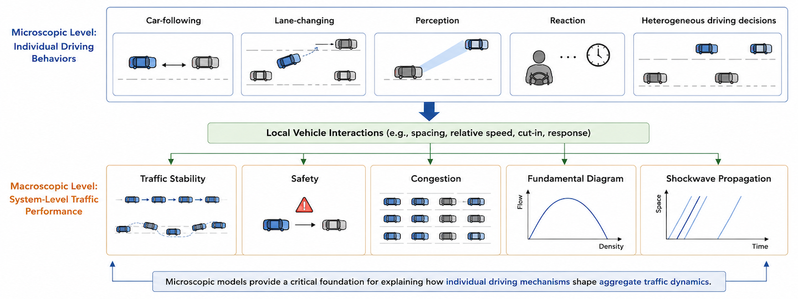
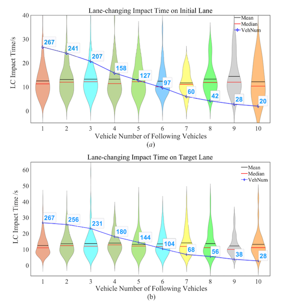
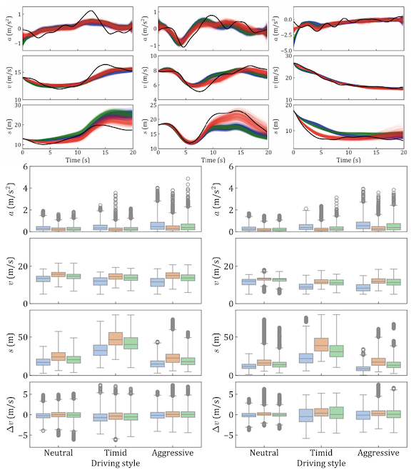
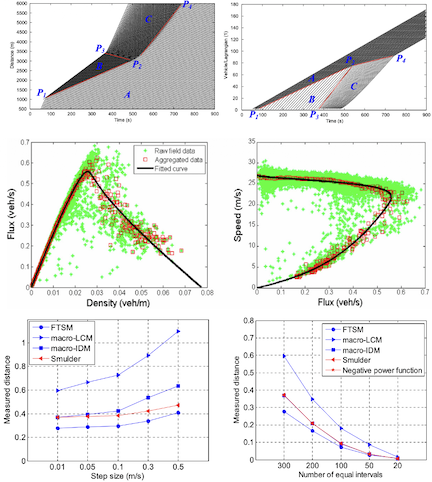
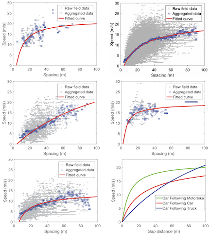
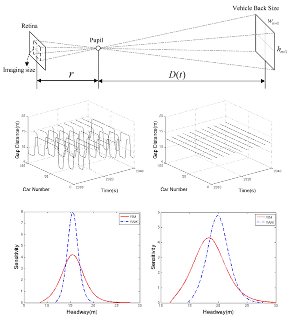
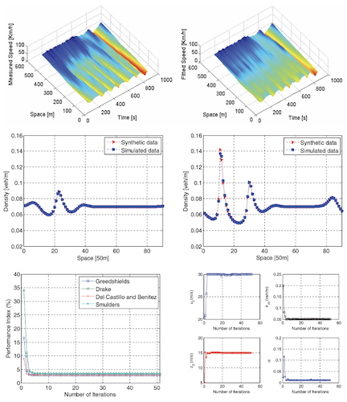

Understanding Traffic Dynamics: Microscopic Modeling
Overview
Microscopic traffic flow modeling is essential for linking individual driving behaviors with system-level traffic performance. Traffic stability, safety, congestion, fundamental diagrams, and shockwave propagation all emerge from local vehicle interactions, including car-following, lane-changing, perception, reaction, and heterogeneous driving decisions. Therefore, microscopic models provide a critical foundation for explaining how individual driving mechanisms shape aggregate traffic dynamics.

Together, my team’s studies form a coherent progression from perception-based and heterogeneous driving mechanisms, to maneuver-induced disturbance quantification, stochastic behavioral modeling, and macro-level traffic flow representations grounded in microscopic behavior.
- In our early work, we proposed a visual imaging car-following model, showing that drivers’ visual perception of the preceding vehicle can better explain following behavior and traffic stability, especially under different vehicle-type conditions[5].
- We then further examined vehicle-type-dependent car-following heterogeneity from both microscopic safety indicators and macroscopic Lagrangian fundamental diagrams, demonstrating that larger vehicles lead drivers to maintain lower-risk and larger-spacing behavior[4].
- To connect microscopic behavior with aggregate traffic flow characteristics, we developed a flexible traffic stream model that links driving parameters, including reaction time, calmness, and sensitivity, with macroscopic fundamental diagrams and shockwave dynamics[3].
- We also derived an anisotropic continuum model from car-following behavior and showed its capability to reproduce real congestion waves[6].
- Extending the focus from car-following to lane-changing, we quantified the temporal and spatial impact of a single discretionary lane change, finding that it typically affects 4 surrounding vehicles for about 12 seconds[1].
- More recently, our work has incorporated stochasticity, driver heterogeneity, and time-varying behavioral regimes into Bayesian car-following models, showing that stochastic multi-regime representations can better reproduce human driving dynamics than deterministic models[2].
Publications





